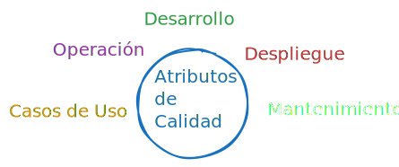
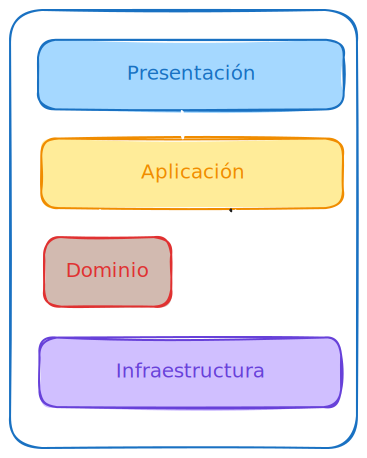
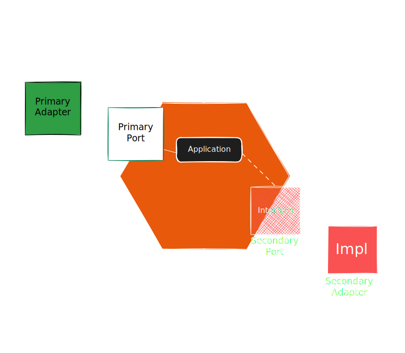
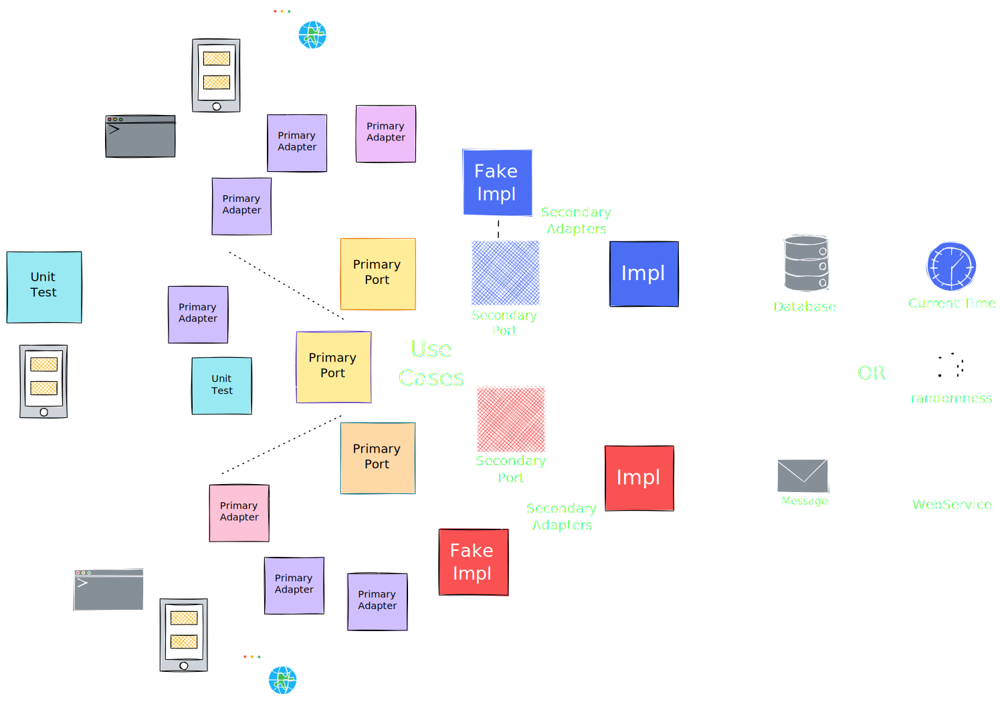

Arquitectura Hexagonal
Luis Arturo Munguía Valdés
Arquitectura de Software
La arquitectura de software es el diseño fundamental que define la estructura, componentes y relaciones de un sistema informático.
Un proposito fundamental es que debe soportar el ciclo de vida de los sistemas:

Arquitectura Hexagonal
- Esta basada en el Domain Driven Design y Multi Tier.
- Promueve aislar el core del sistema del exterior.
- Propuesta por Alistair Cockburn en 2005
- Prumueve resolver problemas de la arquitectura de capas
Principios fundamentales
- Independencia de la infraestructura, el nucleo no depende de las tecnologías
- Separación de Preocupaciones, aisla la lógica y la infraestructura
- Puertos y Adaptadores para interactuar con el exterior
Beneficios de Arquitectura Hexagonal
- Alta mantenibilidad
- Alta adaptabilidad
- Simplicidad en las pruebas
Desafios
- Curva de aprendisaje
- Sobrecarga en proyectos pequeños
- Mayor tiempo de desarrollo
- Resistencia del equipo de desarrollo
Arquitectura de 4 Capas

Adaptadores
- Son implementaciones de los puertos
- Son totalmente reemplazables
- No se deben comunicar entre sí
- Mantienen el nucleo separado
- Se encargan de funciones especificas
Adaptadores Entrada
- API
- UI
- Consumidor de mensajes
- CLI
Adaptadores Salida
- BDD
- Clientes a servicios
- Eventos
- Mail, SMS, Etc
Servicios de aplicación
- Capa de Aplicación DDD
- Implementación de Casos de Uso
- No contienen logica de dominio
- Interaccion con las capas externas
Servicios de aplicación

Dominio
- Entidades
- Value Objects
- Agregates
- Servicios de dominio
Arquitectutura Hexagonal

Mermaid Diagram
sequenceDiagram
participant Client as Cliente
participant API as API
participant Keycloak as Keycloak
%% Paso 1: Cliente solicita acceso a un recurso
Client->>API: Solicitud de acceso al recurso
%% Paso 2: API redirige al cliente a Keycloak para autenticación
API->>Client: Redirigir a Keycloak (URL de autorización)
%% Paso 3: Cliente envía credenciales a Keycloak
Client->>Keycloak: Enviar credenciales (usuario/contraseña)
%% Paso 4: Keycloak valida credenciales y redirige de vuelta a la API con un código de autorización
Keycloak->>Client: Redirigir a API con código de autorización
%% Paso 5: Cliente envía el código de autorización a la API
Client->>API: Enviar código de autorización
%% Paso 6: API envía el código de autorización a Keycloak para obtener un token
API->>Keycloak: Solicitar token (código de autorización)
%% Paso 7: Keycloak responde con un token de acceso
Keycloak->>API: Enviar token de acceso
%% Paso 8: API entrega el recurso al cliente, usando el token de acceso
API->>Client: Entregar recurso